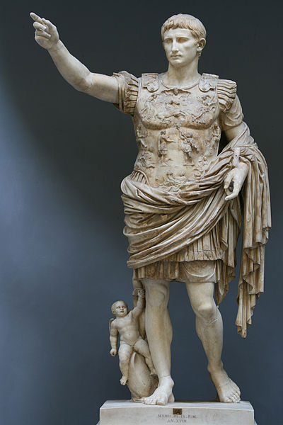

| |
Octavian
Augustus was the founder of the Roman Empire and its first Emperor.he ruled Roman Empire from 27 BC until the time he died in 14 AD.He was of short stautre ,handsome and well proportioned man .Octavian served under Julius Caesar in the Spanish expedition of 46 BC despite his delicate health.The reign of Augustus initiated an era of relative peace known as Pax Romana also called as Roman Peace.He also secured the Empire with buffer region of client states and made peace with Parthian Empire through diplomacy.Augustus died at the age of age of 75 from natural causes.

Octavian
For
more information please visit :
More Information about Octavian from Wikipedia
| |
|
|